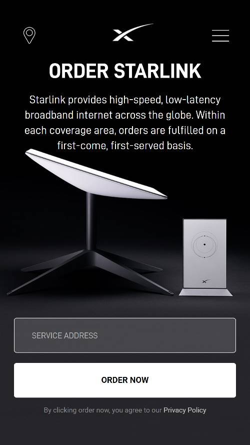

Contrast
Starlink
starlink.com Contrast refers to the arrangement of opposite elements and effects. Contrast is the tool that makes a design “pop,” making it memorable for viewers. The Starlink site does this with a black background. The text and products are whites and grays.
Hicks Law
FareDrop
faredrop.comHick's law is a psychological principle which states that the more options are available to a person, the longer it will take for him or her to make a decision about which option is best. The Faredrop site accomplishes this by having only one subscription price to choose from and one getting statred now button in the middle of the page.
Repetition
Formula 1
formula1.comRepetition simply means the reusing of the same or similar elements throughout your design. Repetition of certain design elements in a design will bring a clear sense of unity, consistency, and cohesiveness. The Formula 1 site does this by by having a larger image that is the feature on the left and two colums of smaller images on the right. They repeat this format down the page. They also repeat a row of 4 images in multiple places on the page.